Three ideas from frame 7, tried on the actual 153,344-number model running in your browser. 🔬 inside · classroom · parameters · 📇 flashcards
Each block's perceptron layer has 256 neurons. Pretend they are 8 experts of 32. For every token, measure how much each expert actually adds to the block's output, then keep only the top 2, as a mixture-of-experts router would. How much of the real output survives?
Attention compares every token with every earlier token, and keeps a cache of keys and values that grows with the context. A state space model keeps one fixed-size state instead. Drag the context length.
Counts only the part that depends on context length: attention's score matrix versus a state space scan with a 16-number state per channel. Memory at 16-bit.
This model writes left to right, one full pass per token (stage 10). A diffusion language model starts with every position masked and fills them in over a few parallel passes.
